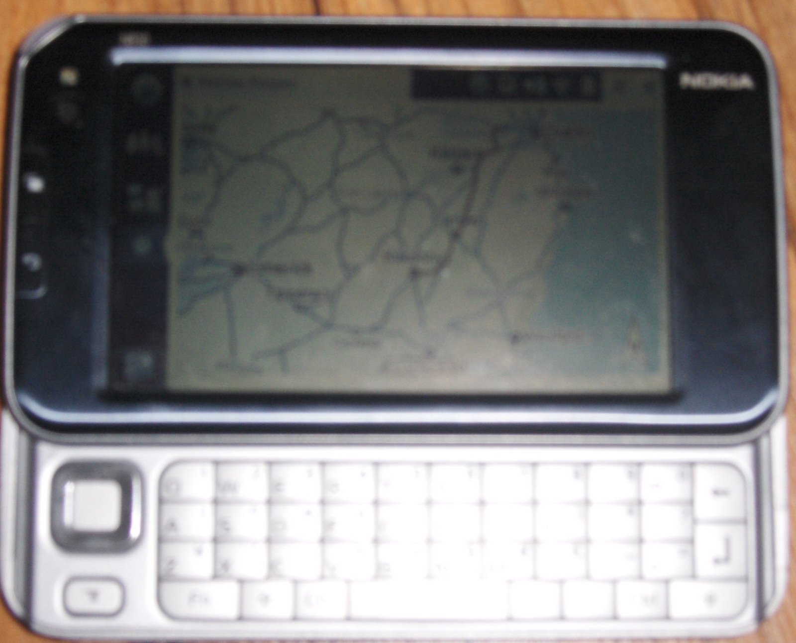

A few days with A Nokia N810

I last discussed the Nokia N810 Internet Tablet in October; when details were only starting to filter out. It wasn’t expected for Nokia to introduce an upgrade to the N800 Internet Tablet (which I also reviewed here) so soon. I certainly don’t envy the position of a small team getting the hardware and software for a mini-computer right in such a short space of time. But needless to say the N810 feels right; in fact it feels more right than the N770 which I thought had the best design of all (be it functionality not so much style). The N810 has bags of style; in a flashy brand-new-car sort of way; it looks expensive and I believe Nokia plays to this in their pricing.
Well the best new feature has to be the operating system: OS 2008. It is clean; stable enough and illustrates beautifully in a Apple Mac sort of way when hardware and software are matched beautifully you get an unrivaled product. But that runs on N800 also; so why bother with the N810? GPS is inbuilt for one; but the mapping software is pretty horrible. Luckily the Open Source MaemoMapper is the original (and still the best) GPS program for any maemo platform (OS 2007, OS 2006). No offence to WayFinder but their software isn’t ideal and feels like a shabby port to the Internet Tablets; like it was ripped off another device and thrown at Nokia’s devices. Nokia also dropped the ball in other areas; such as keylocking and the home applets: home applets are little bubbles of information you immeadiatly see on the N810’s home screen. The problem you ask? The move (by design; older OS ones were fixed) and the keylock made to keep them stable is not functional as I believe it could be. Why can’t I set an auto screen lock when I flip the keyboard back in? That kind of commission is what I’d call a ‘schoolboy error’.
{kind=link}
Apps make any device and the N810 has a few good ones; but nothing totally wow or killer just yet. Skype as many people are aware is semi-included in the device (after a download) and as of yet unlike its desktop Linux counterpart; it lacks full video support (on a device with a decent vga webcam camera
- no sense here!). There is also full GoogleTalk integration; with SIP support coming up (perhaps with full video on SIP; maybe as of yet with GoogleTalk if they adopt SIP?). Other than that great apps include FBreader a great Windows/Linux ebook reader; and some fun pass the time games like TuxPuck, IceBreaker and LXDoom can be downloaded. What about the apps included I hear you ask? Well the Web Browser is quality from Mozilla and far outshines the Opera browser which graced both the N770 and N800. Updates are not really noticeable in the core non-essential apps like Email (an awful excuse for an email client), RSS reader (decent enough) and Filemanager. To the core I suspect they made a bevy of changes; but I’m not that hardcore so I’ll skip technical details like that; needless to say its startup time was reduced; battery life seems longer; and it feels more responsive on OS 2008.
So should I buy it? If you don’t have a N800 I would say definitely go for it; as long as you think the price is right. As with any tech device; shop around for a bargain on the price over Nokia’s retail listed price. Who is it aimed at? People in college like me who like to keep in touch with friends; read their pdfs docs; and cringe to be away from some sort of connectivity. This also applies to business users who would have similar uses with clients; but unfortunately the necessity of a second device in non-wifi connected areas kills this devices true potential until Nokia decides to inbuild 3G or Wimax.
{kind=link}